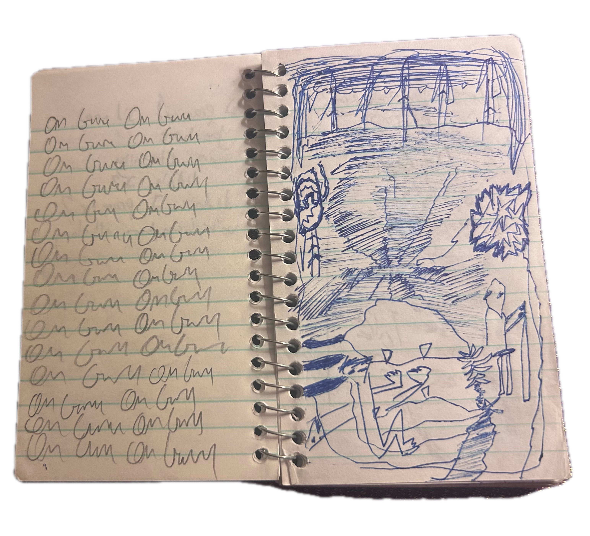

2026
Tell me about the dream we
had between train rides
to and from infinity
The heavy steel rolling
and our heavy lungs heaving
Despite, and through, a
heaving synthesis of
distorted bass and
a story you told once
of walking around katonah
forever in the rain
Tell me again, dream
lover, how it felt
to be alone then
Every drop of rain that
touches my face is
one of your tears
that I wipe off your
gentle soft cheeks
down under the cow's
hill leaning against me,
leaning against the
wooden handle.
Remember the storm,
one of those nights,
and the orange-fire in
the sky? It was pouring
rain but there are
still coals.
Somehow
I'm finally finding myself
in the soft quiet
cave in the night
that was your home then
are you still here
sleeping, dreaming
your conscious dream?
my love for you is
more permanent
than anything I can
think of. My love for you
is like love for an old
broom, Eventually I am
swept up too.
4/2026
Subtle changes in my
body and emotions
I'm a little weaker -
I run out of breath
quickly and my skin
is more susceptible to
scratches and bruises.
My eyes are softer
and my belly is
softer. I feel
more like a divine
child
more like
a low point of a stream
not blundering around
the woods with my
big hands and feet.
making demands
and getting disoriented
and sad when there
is no response from
the silent woods.
I am quieter
I become the
woods now in
actuality
My consciousness
is an ocean -
not because my
consciousness has
grown to include
all things but
because I have
shrunk in a a
girlish way to
the lowliest
stream.
6/22/26
I'm in a place
on 7/4/2025 I was
here with 1 and
2 and 3 and
4 and 5
and 6
The turning point
of dreary phenomena
into a more
defined dissolution.
Similar to 2 days
and 6 years ago
when I met those
guardian angels who
still float around
my shoulders.
I'm in a place
where 4 years ago
I was thinking about
you with real possibility
for the first time
and you texted me
"I should've been
there
why didn't
you tell me
to come?"
I'm sorry
But you were there
over my shoulder
anyway
you still are, always
2 nights ago I
dreamed about you
and I actually
saw you and
perceived you and
we just went about
our day and
you were so
bright and beautiful
and everything I
remember about you
was real and true
and I was actually
happy again
I'm so sick of the poetry.
Where are you?
Later
I promised I'd meet
you here
in eternity
didn't I?
didn't I promise?
we've been here all along
